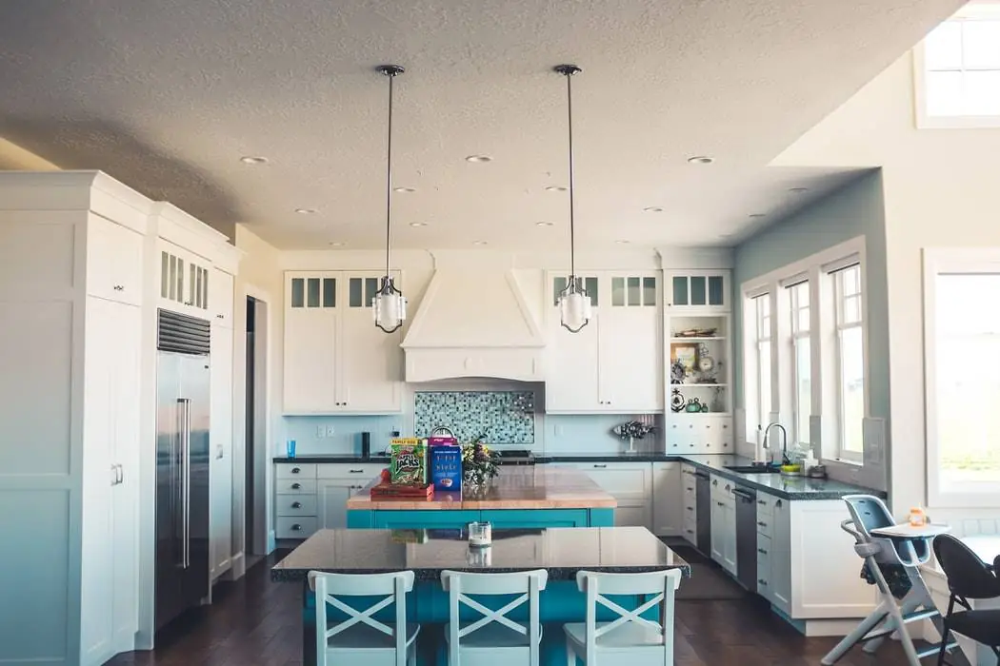
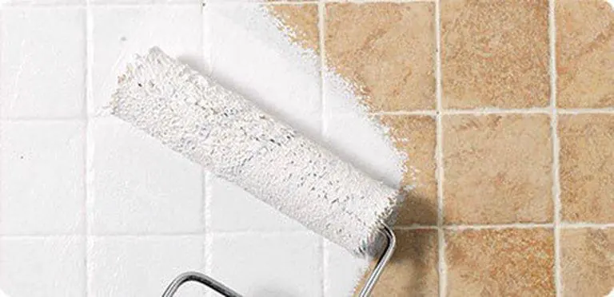

Keukens en keukenkasten verven doe je zo!
Is jouw keuken toe aan een opfrisbeurt of heb je gewoon zin in een volledige make-over? Je keukenkasten schilderen maakt al een groot verschil, maar je kunt natuurlijk ook meteen je volledige keuken onder handen nemen. In deze blog geven we je graag enkele tips om je keukenkasten te verven en je keuken in een nieuw jasje te stoppen.


Keukenkasten schilderen, hoe begin ik eraan?
Wanneer er niet meteen budget is om je volledige keuken te vernieuwen, maar je wel graag een nieuwe look wenst, is het een goed idee om je keukenkasten een nieuw leven te geven. Een kleine en budgetvriendelijke ingreep waarmee je toch creatief kunt zijn en een groot verschil kunt maken!
Een goede voorbereiding is goud waard
Je kunt uiteraard niet zomaar beginnen schilderen. Demonteer de keukenkasten en verwijder alle kastknoppen en scharnieren. Zo gaat het schilderen gemakkelijker en verkrij je een mooier resultaat.
Vervolgens reinig je de keukenkasten grondig. Vetplekken moeten verwijderd worden, zodat deze tijdens het schuren niet in de kast kunnen dringen. Inderdaad, je raadt het al: schuren! Kies voor een fijne korrel en schuur de kastdeuren om een goede hechting van de verflaag te garanderen. Breng alvast de juiste grondlaag aan voor jouw kasten en vraag hiervoor advies in de verfwinkel.
Kies de juiste verf voor jouw keukenkasten
Voor keukenkasten kan je kiezen tusen solventgedragen en watergedragen lakverf. Terwijl solventgedragen lakverf bestand is tegen vet en ook sterker en krasvaster is, kies je voor een lichte of witte keuken beter voor watergedragen lakverf, aangezien dit type minder tot niet vergeelt. Deze is wel iets gevoeliger voor vettige handen iets minder krasvast. Heb je dus kleine kinderen rondlopen die graag met hun vuile handjes aan de kasten komen, dan kies je beter voor solventgedragen verf.
De juiste kleur voor je keukenkasten bepalen
De kleur die je voor je keukenkasten kist, moet vanzelfsprekend passen bij de rest van je keuken. Een kleindere keuken? Dan kies je best voor lichtere kleuren om een gevoel van ruimte te creëren. In een grotere keuken komen sterkere kleuren beter tot hun recht. Durf gerust een opvallende kleur te gebruiken om je keuken meer karakter te geven!
De volledige keuken schilderen
Is het nog niet nodig om de volledige keuken te vernieuwen, maar wil je wel meer doen dan enkel de keukenkasten te schilderen? Dan kan je natuurlijke ook de hele keukenruimte verven in een nieuwe kleur.
Ook hier is het belangrijk om de juiste kleuren te kiezen, waarbij veel ook afhangt van hoe jij jouw keuken ervaart. is het een open keuken met eetruimte? Dan zijn warme kleuren zoals rood, oranje of geel best wel geschikt.
Heb je een grotere keuken, dan kan je neutrale tinten combineren met een opvallend accentkleur.
Aan de slag!
Net zoals bij de keukenkasten moet je ook je keuken volledig en grondig reinigen voordat er een nieuwe verflaag wordt aangebracht. Zorg er ook voor dat je een echte kwaliteitsverf kiest. Wij raden altijd een verf met hoge glans aan, want hoe hoger de glans, hoe eenvoudiger te reinigigen. Solventgedragen lakverf wordt ook vaker gekozen dan watergedragen lakverf, omdat deze vetresistenter, krasbestendiger en eenvoudiger te onderhouden is.
Wees gerust creatief. Misschien is (een stukje) muur in magneet-of bordverf wel een leuk idee? Handig om je weekplanning op te noteren of briefjes aan te hangen.
Keukenkasten schilderen kan een keuken een volledig nieuwe uitstraling geven zonder ingrijpende verbouwingen. De juiste voorbereiding, producten en afwerking bepalen daarbij hoe duurzaam het resultaat zal zijn. Tijdens een vrijblijvend plaatsbezoek adviseren we u graag over de mogelijkheden. Ontdek meer over onze binnenschilderwerken.
Lees ook

Kan je pvc schilderen?
Raamkozijnen of een garagepoort die verkleurd zijn door de zon? Zowel binnen- als buitenschrijnwerk in pvc kan je schilderen.
Lees meer
De voordelen van vliesbehang en waarom je het best laat hangen bij renovatiewerken!
Vliesbehang is een snelle en makkelijke oplossing om je muren te renoveren en dient als ondergrond voor de verflaag.
Lees meer
Kan ik mijn faiences of wandtegels schilderen?
Ja! Als je de stijl van je badkamer of keuken beu bent en graag de ouderwetse faiences achter een laagje verf verbergt,…
Lees meerEen mooi resultaat begint met een goed gesprek.
Tijdens een vrijblijvend plaatsbezoek luisteren we naar uw wensen, geven we professioneel advies en bekijken we samen de mogelijkheden voor uw schilderwerken of interieurafwerking.